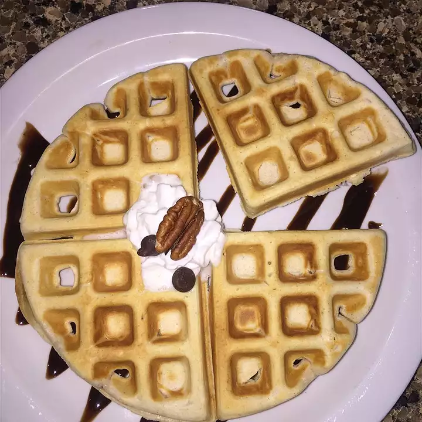

Classic Waffles

Description
Perfect fluffy homemade waffles with a great taste!
Ingredients
- 2 eggs
- 2 cups milk, or more as needed
- ½ cup vegetable oil
- 2 tablespoons vanilla extract
- 2 cups all-purpose flour, or more as needed
- 3 tablespoons white sugar
- 1 tablespoon ground cinnamon
- 1 tablespoon ground nutmeg
- 3 teaspoons baking powder
- 1 teaspoon salt
Steps
- Preheat a waffle iron according to manufacturer's instructions.
- Whisk eggs together in a large bowl until fluffy. Mix in 2 cups milk, vegetable oil, and vanilla extract until combined.
- Combine 2 cups flour, sugar, cinnamon, nutmeg, baking powder, and salt in a separate bowl. Slowly pour flour mixture into egg mixture, stirring as you pour. Mix until few to no lumps remain, being careful not to overmix. Add more flour if batter is too thin, or more milk if batter is too sticky or thick.
- Ladle some of the batter onto the preheated waffle iron. Cook until waffle is golden brown and the iron stops steaming, 2 to 5 minutes. Repeat with remaining batter.